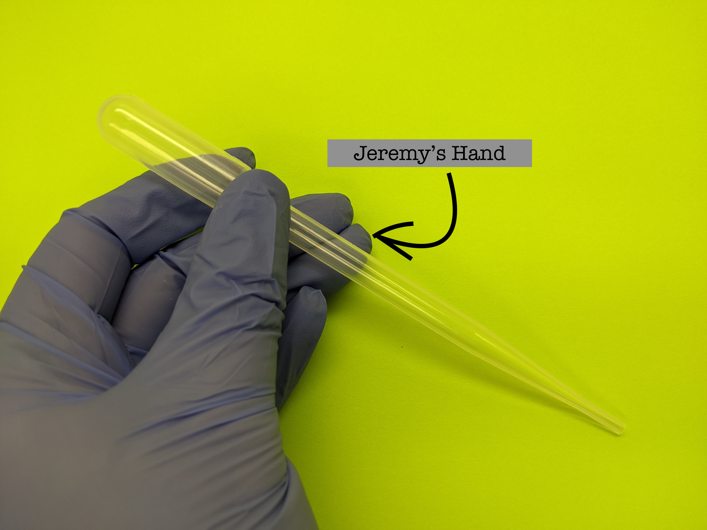
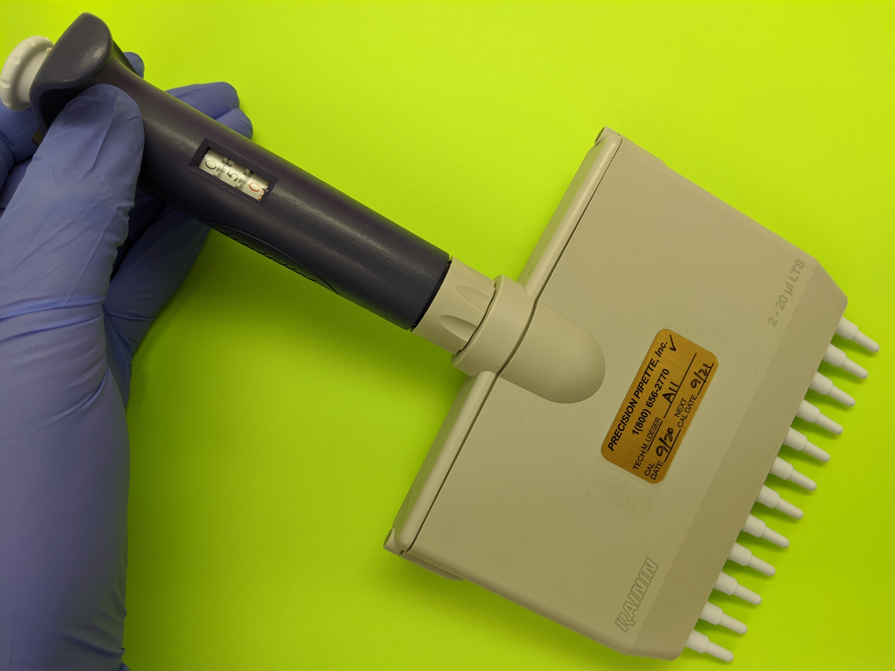
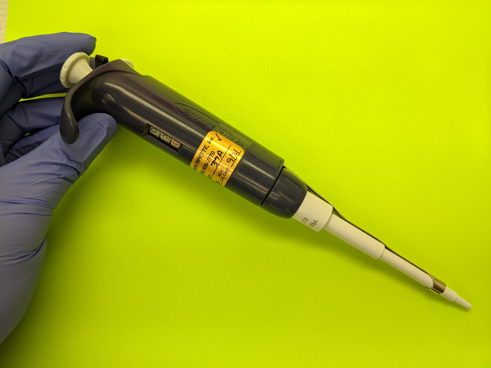

Introduction to Pipetting
In this course, you, the students, a.k.a, future health-care professionals, will learn the following concepts:
- Types of Pipettes
- Pipetting Techniques
- Pipetting Calibration
Types of Pipettes
Listed below are most common types of pipettes found in the laboratory:
- Transfer pipettes
- Volumentric and Serological Pipettes
- Micropipettes
- Repeator Pipettes
Transfer Pipettes
Transfer Pipettes are more common in the lab than its predecessor, the Pasteur pipette, yes, named after Louis Pasteur, which has a separate bulb and is not graduated for certain volumes. Transfer pipettes are made of molded plastic that aspirates fluid in a vacuum.
Volumetric and Serological Pipettes
A pipette is either calibrated to “TC” or “TD” and abbreviations are normally printed on the side of the pipette or the bulb of the pipette.The abbreviation TC means “to contain” and TD means “to deliver." In a 'TC' marked pipette, the contained quantity of the liquid corresponds to the capacity printed on the pipette, while ‘TD’ marked pipettes deliver the quantity of liquid that corresponds to the capacity printed on the pipette. The drainage holdback error is the amount of liquid required to wet the inner surface of the pipette, which create the remaining liquid left at the tip of pipette after it has been used. The drainage holdback error has been taken into account during calibration at a standard temperature, which is generally 20C. We can understand this in a simple following equation: The volume of TD pipette = Volume of TC pipette + drainage holdback error. The double rings on the upper end of pipette indicate that the pipette is a “blow out” type/TC pipette and should be blown using a rubber bulb. Absence of the ring indicates that pipette is a TD pipette which means the still left liquid in the pipette has already been taken into account during calibration and shall not be expelled by blowing out. The formal difference between the blow out pipettes “adjusted to deliver” and pipettes “adjusted to contain” may be small (since blowing out the remaining liquid is possible in both cases), but it does make a difference when it comes to the achieving the accurate result of an experiment. According to International Standards Organization, “ex” is used to indicate that the pipette has been adjusted “to deliver” and the marking “in” is used to indicate that the pipette has been adjusted “to contain”. TD pipettes are much more common than TC pipette. Most typical graduated pipettes or bulb pipettes are usually calibrated to deliver (TD), whereas capillary pipettes are adjusted to contain (TC).
Volumetric pipettes are designed to accurately transfer a specific amount of solution. These pipettes can only be used to deliver the volume of liquid for which it is calibrated. Volumetric pipets have narrow tips and a bulb-like expansion in the middle. The single calibration mark for these pipets is found in the tube section above the center expansion.
A serological pipette is designed for use as a blow-out pipette. A serological pipette also has graduation marks, which start nearer the end of the tip. The pipette can be blown out by gravitational force or air pressure. Rubber bulbs attached to the end opposite the tip are commonly used to "blow out" any remaining solution. Having solution remain in the pipette can affect an experiment by allowing a discrepancy between what is measured and what is transferred. The designation of whether the pipette is "to deliver" (TD) or "to contain" (TC) is marked on most serological pipettes.
Micropipettes
Air displacement pipetting is highly accurate for standard pipetting applications. However, temperature and atmospheric pressure, as well as the specific gravity and viscosity of the solution, may affect the performance of air displacement pipettes. Molecular laboratories commonly use two types of air displacement pipettes: single micropipettes and mulitchannel pipettes. Micropipettes differ in size and volume dispensed, but depending on those particular aspects, they also require specific pipette tips. Micropipettes use a disposable pipette tip to aspirate liquid, note that the tip is the only part of the pipette that makes contact with the solution. A new tip is utilized for every sample in order to prevent cross contamination.
 
| Common Micropipette Size | Volume Range |
|---|---|
| P2 | 0.2-2uL |
| P10 | 1-10uL |
| P20 | 2-20uL |
| P100 | 20-100uL |
| P200 | 20-200uL |
| P1000 | 100-1000uL |
A single micropipette uses one pipette tip and has one channel.
Multichannel pipettes come in different varieties. Common setups are 8 or 12 channels. Multichannels may improve efficiency and productivity and reduce ergonomic concerns when pipetting into 96-/384-well plates, but quality or handling concerns are valid if the tip is not seated or the pipette is not handled correctly.
Positive displacement pipetting is based on direct contact of the piston with the liquid. The aspirated liquid amount depends on the dimensions of the cylinder or capillary and the movement distance of the piston. In positive displacement pipettes the tips contain both the cylinder/capillary and the piston. Repeat pipettors are ideal precision instruments for completing long pipetting series and useful for viscous or volatile liquids.
Multichannel pipettes come in different varieties. Common setups are 8 or 12 channels. Multichannels may improve efficiency and productivity and reduce ergonomic concerns when pipetting into 96-/384-well plates, but quality or handling concerns are valid if the tip is not seated or the pipette is not handled correctly.
Positive displacement pipetting is based on direct contact of the piston with the liquid. The aspirated liquid amount depends on the dimensions of the cylinder or capillary and the movement distance of the piston. In positive displacement pipettes the tips contain both the cylinder/capillary and the piston. Repeat pipettors are ideal precision instruments for completing long pipetting series and useful for viscous or volatile liquids.
Pipetting Techniques
Reverse pipetting is recommended for viscous or foaming liquids as well as very small volumes. The blow-out volume is additionally aspirated in the first step and stays in the pipette tip to be discarded

Forward pipetting is the standard technique for most aqueous solutions.

Pipetting Calibration
Calibration of pipettes means determining the difference between the dispensed volume and selected volume, and calibration of pipettes is of great importance for accurate and precise pipetting results. Ambient conditions such as air pressure, humidity, temperature and even the altitude affect every pipetting event.
Summary
Grasping the theoretical background and mastering the dexterity takes time and practice. I encourage further reading and practice techniques in a lab setting.
Click HERE for supplemental reading.